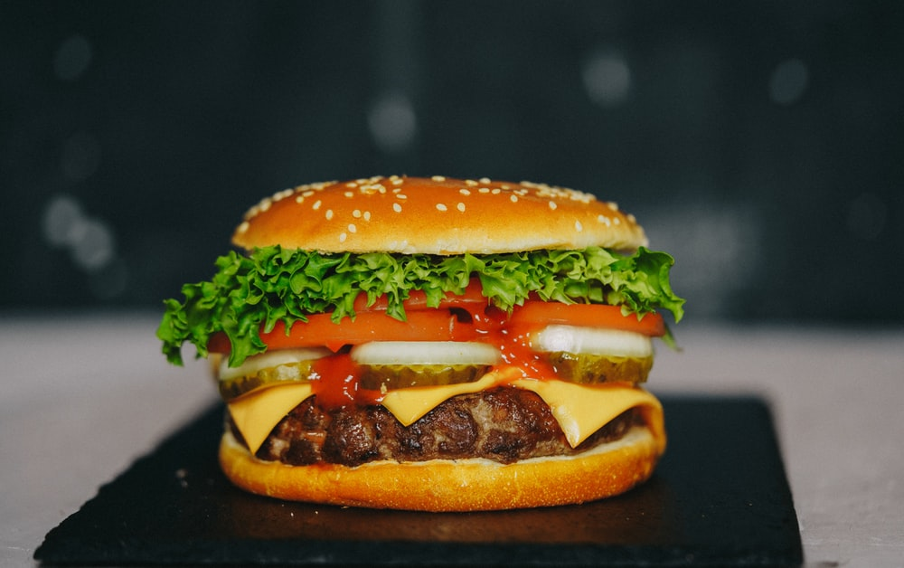

About our Hamburger
A cheeseburger is a hamburger topped with cheese. Traditionally, the
slice of cheese is placed on top of the meat patty. The cheese is
usually added to the cooking hamburger patty shortly before serving,
which allows the cheese to melt. Cheeseburgers can include
variations in structure, ingredients and composition. As with other
hamburgers, a cheeseburger may include toppings such as lettuce,
tomato, onion, pickles, bacon, mayonnaise, ketchup, and mustard. In
fast food restaurants, the cheese used in cheeseburgers is usually
processed cheese. Other meltable cheeses may be used as
alternatives. Common examples include cheddar, Swiss, mozzarella,
blue cheese, and pepper jack.

About our Cheesy Pizza
Pizza cheese encompasses several varieties and types of cheeses and dairy products that are designed and manufactured for use specifically on pizza. These include processed and modified cheese such as mozzarella-like processed cheeses and mozzarella variants. The term can also refer to any type of cheese suitable for use on pizza. The most popular cheeses used in the preparation of pizza are mozzarella (accounting for about 30%), provolone, cheddar and Parmesan. Emmental, Romano and ricotta are often used as toppings, and processed pizza cheeses manufactured specifically for pizza are mass-produced. Some mass-produced pizza cheeses are frozen after manufacturing and shipped frozen.

About our Spicy French Fries
French fries (North American English), chips (British English), finger chips (Indian English), french-fried potatoes, or simply fries, are batonnet or allumette-cut deep-fried potatoes, possibly originating from France. They are prepared by cutting potatoes into even strips, drying them, and frying them, usually in a deep fryer. Pre-cut, blanched, and frozen russet potatoes are widely used, and sometimes baked in a regular or convection oven; air fryers are small convection ovens marketed for frying potatoes.
About our Desi Ras Malai
Ras malai or rossomalai (Bengali: রসমালাই) or rasamalei (Odia: ରସମଲେଇ) is a dessert originating from the eastern regions of the Indian subcontinent. The dessert is called rossomalai in Bengali, ras malai in Hindi, and rasa malei in Odia. It is popular in India and Bangladesh.
Although found throughout India, the ras malai of the Comilla District in Bangladesh and that of Kolkata, West Bengal is known prominently.
The origin of the sweet is impossible to verify but there are several underlying stories. K.C. Das Grandsons claims that it was invented by K.C. Das in Kolkata. The Sen brothers of Comilla operating under the Matri Bhandar brand also claim to be the original maker of the dessert. However, this is impossible to verify. Bangladesh has begun the process of registering geographical indication status for Comillar rasmalai.